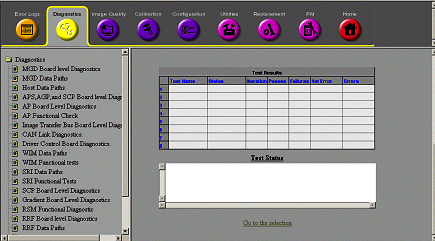
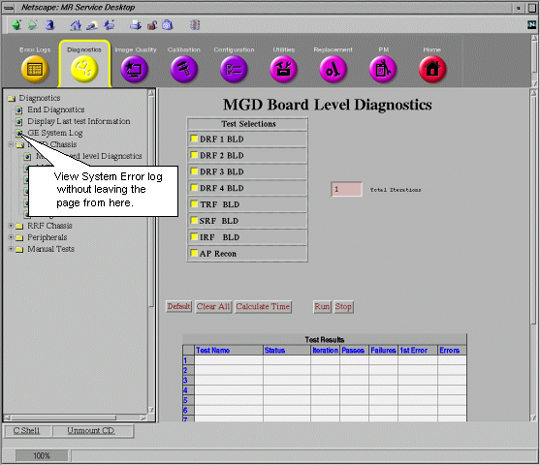
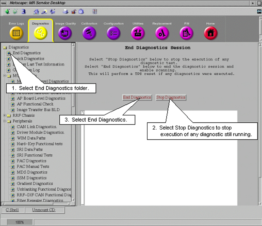
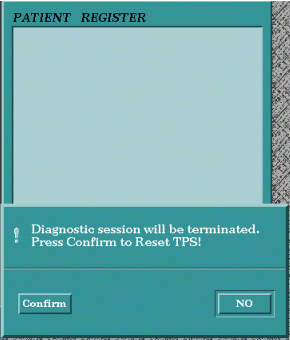

- 00000018WIA3063DF20GYZ
- id_131066873.0
- Aug 29, 2019 1:38:54 AM
Running Diagnostics
Select the desired diagnostic test to run. The components that can be tested are listed in Table 1 in Hardware Tested.
Selecting Tests
Tests can be deselected or selected from the Selection column by highlighting the box next to each. See example in Figure 1. Other choices can be made depending on which test group is selected. These choices are described in the following sub-sections.

The number entered in the Total Iterations box determines how many times the selected diagnostics will run.
Test Control Buttons
-
Default – Selecting this will configure the selections and options into a default condition.
-
Clear All – Deselects all selections and options.
-
Calculate Time – Once all the selections and options are made then selecting this button will provide you with an estimate of the total run-time needed to complete all the tests.
-
Run – Select this button to start diagnostic test execution on the selected components.
-
Stop – Select this button to stop execution of the diagnostic tests.
Test Results Table
Test Results are displayed in a table labeled Test Results which is located under the diagnostic selections. See Figure 2.

-
Test Name – Identifies executing test.
-
Status – Provides pass/fail status of test.
-
Iteration – Displays number of times test run.
-
Passes – Displays number of times test successfully completed.
-
Failures – Displays number of times test failed to complete successfully.
-
1st Error – Displays the first error encountered when test was run.
-
Errors – Displays subsequent errors.
Test Status Window
Messages reporting on the status of the various executing tests are displayed in this window.
Viewing the System Error Log
Leaving the Diagnostics Menu will abort any tests that are running. A link to the System Error Log has been provided in the Diagnostics page so that it is not necessary to leave the page to view the System Error log.

Exiting Diagnostics and Leaving Diagnostics Page
Leaving the diagnostics page will end any tests that are still running. A TPS Reset must be completed after diagnostics have been run before the system will permit scanning. There are two ways that this can be done.
End Diagnostics
All tests can be ended and the TPS Reset from this window.

Attempt to Scan from Scan Desktop
If one leaves the Toolbelt Desktop and goes to the scan Desktop and attempts to select New Patient to setup a scan, the system will ask for confirmation that diags should be stopped and a TPS Reset should occur. After the reset successfully finishes, the system will permit scanning.
